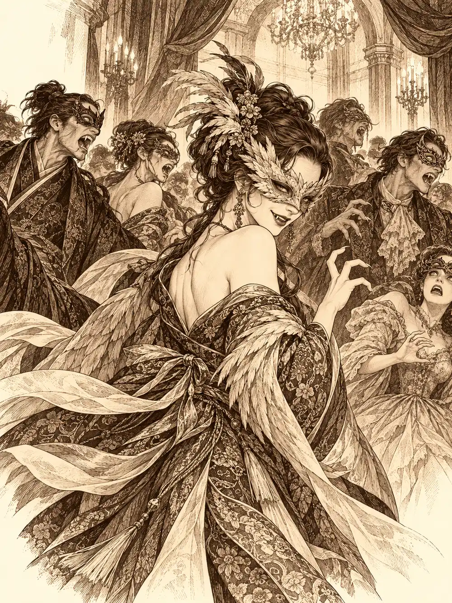

Capítulo 150
La mascarada
Libro IX · Mareas y muertos
Calista subía las escaleras con Mei, cansada, pensando en el vestido que tenía que ponerse aquella noche, cuando oyó gritos al otro lado de una puerta.
"¡Bájate los pantalones, tonto del bote!".
Se paró en seco. Cogió aire, suspiró y abrió.
Gelbreak estaba de pie en mitad del cuarto de las niñas, insultando a una maceta con una seriedad de maestro. Arwen y Shizuka lo miraban con los ojos muy abiertos y repetían cada palabra como quien aprende una oración.
"Cabeza de tiesto", decía Arwen. "Cabeza de tiesto, cabeza de tiesto".
No le salía. A Shizuka sí. La niña se volvió hacia Gelbreak, lo señaló con el dedo y gritó "¡Gelbreak, eres un cabeza de tiesto!", y la magia salió de su boca con tanta fuerza que la planta se encogió. Luego se volvió hacia la puerta, vio a Calista y se lo dijo también a ella, y Calista notó la orden golpearle la frente y se la sacudió de encima como una mosca.
Las aletas de la tritón se alzaron como lanzas.
"¿Esto es jugar con las niñas?".
"Me estaban pidiendo que les enseñara a desintegrar cosas. Creo que he hecho bien".
"Mira, no sé qué te pasa hoy, pero se te ocurren las ideas más estúpidas que has tenido nunca. De todo el tiempo que llevas conmigo, hoy es el peor día". Se volvió. "Mei, ¿podrías leerles un cuento?".
"¡Un cuento! Mei, tenemos un libro de la biblioteca superdivertido...".
"Un cuento infantil".
Calista se marchó a cambiarse sin mirar atrás. Se la veía cansada. Llevaba días metida con la perla velada en asuntos de recursos militares, de la mañana a la noche, y además había perdido un entrenamiento contra Wel. Había estado cerca de sorprenderlo, de verdad, hasta que él se puso serio.
Esa noche, Igor, el cochero de Alister, que cojeaba un poco al andar, acompañó a Serafina hasta una mansión de la zona alta. No se parecía a ninguna casa de Sho. Era grande, de madera oscura, con un tejado que no era el de las casas de la isla y puertas que se abrían hacia dentro, a la manera de las tierras de donde venía la capitana. En el vestíbulo había cuadros de mujeres y luces doradas.
"Esto sí que es más lo mío", dijo Serafina en voz baja. "Me recuerda a cuando viajaba. A lo que estaba acostumbrada a saquear, más bien".
Todos llevaban máscara y traje de gala. Los músicos tocaban en un rincón, la gente bailaba, comía, conversaba en los sofás, y todo el mundo parecía estar esperando a alguien. Serafina fue derecha a la mesa de la comida.
No era la única que había llegado. Kurobane, que la había visto pasar por la ciudad, había saltado la valla de un patio, había trepado a un árbol y se había colado por la ventana de unos baños. Allí se puso un traje blanco que había comprado para la ocasión, muy distinto de lo que solía llevar. Mientras se ajustaba la máscara, su reflejo en el espejo le habló con otra voz.
"No deberías estar aquí".
"¿Qué has hecho tú ahora?".
"Ya lo sabrás".
El reflejo se fue. Kurobane salió.
Guxi, por su parte, había oído desde una esquina a Serafina hablar con Igor sobre el baile y la había seguido entre las sombras, ayudado por su capa. Se convirtió en murciélago, entró por la misma ventana de los baños y allí cambió de cuerpo y de voz por completo. Salió convertido en un hombre al que nadie conocía y que, si alguien le preguntaba, se llamaba John Smith.
Y por último llegaron los que llegaban tarde. Calista se puso una apariencia humana; Gelbreak se encargó de la suya en un callejón, de donde salió con otra cara y un traje blanco perlado. En la puerta, Calista sacó la nota manchada de sangre que había encontrado en las cloacas, encima de un vampiro muerto, la misma que había creído una lista de ingredientes. El mayordomo la miró, sonrió y se la guardó.
"Adelante".
Era una invitación. Calista entró en la sala de baile y se le escapó un suspiro.
"Nunca había estado en un baile de este tipo".
"Recuerda que venimos a investigar quién es este nuevo noble", le dijo Gelbreak. "No hagas nada imprudente".
"Ya lo sé". Le dio un beso en la mejilla. "Y tú no te muevas de mi lado, que con tanta máscara nos vamos a perder".
Había vino en todas las mesas, y el vino tenía algo. Una copa podía hacer que uno rechazara cualquier caricia, otra lo dejaba nostálgico hasta las lágrimas, otra le daba ganas de bailar y de cantar, y otra hacía que la persona más cercana pareciera irresistible. Los efectos duraban un rato y luego cambiaban. Más tarde, Gelbreak miraría la etiqueta de una de las botellas, leería el nombre de Fukami y se taparía la cara con la mano.
Serafina, desde la mesa, notó tres miradas encima: una mujer en lo alto de la escalera, otra junto a la pared y una tercera que no consiguió localizar. Reconoció también a Kurobane bajo la máscara cuando él se le acercó entre la gente con un andar grácil, casi de pelea, y le hizo una reverencia.
"Buenas noches, querida".
"¿Qué haces aquí, copito?".
"Te vi pasear por la ciudad. Ya sabes que soy muy bueno escondiéndome. Si necesitas algo, la sombra, aunque se vista de luz, sigue siendo sombra".
Se levantó la máscara lo justo para enseñarle media sonrisa y se fue.
Después se le acercó un desconocido, un tal John Smith, y la invitó a bailar. A Serafina la primera copa le había dejado el cuerpo frío, sin ganas de que nadie la tocara, y le dio una excusa: estaba mareada, había comido demasiado, no quería dar un espectáculo. Más tarde, quizá. John dijo que la esperaría.
Por fin apareció el anfitrión. Era alto, muy alto, y se movía entre sus invitados como quien es dueño de algo más que de la casa. Se acercó a Serafina. Era Alister, el hombre de la flor del mar. Le sirvió una copa con sus propias manos, y aquella copa la dejó nostálgica, con los ojos húmedos, recordando amores pasados. Alister le propuso salir al patio.
El patio era un jardín perfecto, con una fuente de agua transparente y unas flores tan abiertas que el aire pesaba de su olor. Se sentaron en un banco.
"A veces no sé ni lo que estoy haciendo", dijo Serafina. "¿Por qué me eligieron capitana, si nadie me quería? ¿Para qué me pidió matrimonio, si no me iba a querer? Y ahora me ruega que vuelva".
"Tranquila. Podemos cambiar los malos recuerdos por otros nuevos".
Ella apoyó la cabeza en su hombro y lloró un poco.
Guxi lo veía todo desde detrás de unos rosales. Apretó la mano en la empuñadura y estuvo a punto de saltar, pero se contuvo en el último segundo. Entonces algo del jardín se le metió dentro. Era el olor de aquellas flores. Le entraron unas ganas enormes de quedarse allí, sin hacer nada, oliendo y contemplando, aunque una parte de él quería seguir a Serafina cuando ella volvió al salón. No pudo. Se quedó solo en el jardín, con una copa en la mano, bailando con nadie a la luz de la luna, llorando a moco tendido con el vino de la nostalgia en la sangre. Tardó un buen rato en sacudirse aquello y volver dentro.

A Kurobane le pasó algo parecido, pero al revés. Una mujer enmascarada, que se presentó como Bambolina, lo sacó a bailar y lo llevó a un reservado. Le hizo preguntas sobre el sur, sobre los combates de Kuroto. Al principio él rechazaba sus caricias; luego el vino cambió y la encontró irresistible. Cuando se despidieron, ella le ofreció un collar. Kurobane notó que tenía magia, lo aceptó, se levantó la máscara para dedicarle una sonrisa de gratitud y se lo guardó sin ponérselo.
Calista y Gelbreak se habían apartado del salón por un pasillo lateral. La primera copa había hecho que ella se le pegara al costado y le susurrara que aquel traje le sentaba de maravilla y que debería ponérselo más a menudo; la segunda la hizo llorar. Le dijo que echaba de menos los tiempos en que no era nadie, en que solo la habían mandado a Kuroto y podían pasar el día juntos. Ahora iban a quitarle el cargo y devolverla al mar, y ella no quería irse.
"No te van a echar", le dijo él, y la abrazó. Al abrazarla le enseñó la etiqueta de la botella. "Es el vino de Fukami".
Calista se secó las lágrimas con la manga.
"Ya veo. Hay que seguir investigando".
En una despensa encontraron estanterías enteras de viales llenos de sangre, ordenados por grupos, con etiquetas que decían cosas como A positivo. En una habitación recogieron documentos e invitaciones, y vieron un peine y un retrato que, en cuanto los apartaban de su sitio, se volvían viejos, sucios, con el marco carcomido, y recuperaban su lujo en cuanto los devolvían. Pensaron que era una ilusión, que toda la casa podía serlo. Al final de un pasillo había una puerta distinta de todas, de piedra en lugar de madera, cerrada con tanta fuerza que Gelbreak tuvo que intentarlo dos veces, con Calista ayudándolo, hasta que cedió.
Dentro olía a podrido. Había cuerpos tirados por el suelo, sangre, y al fondo otra puerta, más baja, con las marcas del shogunato grabadas en la piedra.
"Esto es un acceso a las alcantarillas", dijo Calista. "Sangre, cuerpos, alcantarillas. Nos acabamos de meter en un nido de vampiros".
Gelbreak sacó el estoque de la bolsa. Calista le puso la mano encima.
"Hay muchos invitados. Puede que haya civiles. Guárdalo de momento".
La puerta de piedra empezó a abrirse a su espalda. Gelbreak los volvió invisibles a los dos y se pegaron a la pared. Entró Verbin, la cazadora pelirroja, caminando entre los cadáveres, que apartaba con el pie, y haciendo gestos de asco. Calista le susurró a Gelbreak al oído quién era, y el gruñido que se le escapó a él bastó para que la pelirroja sonriera, sacara un frasquito de entre la ropa y lo estrellara contra el suelo. Estalló una luz blanca, radiante, que les quemó la piel y los dejó al descubierto.
"Vaya. Así que estabais aquí". Se cruzó de brazos. "No hace falta ser muy listo para entender qué es este sitio. ¿Sabes adónde lleva esa puerta?".
"A las alcantarillas".
"Bien. Pues a ver cuándo ese tal Banzo me trae el grupo que me prometió para bajar ahí abajo".
"Cuando tenga tiempo. Los cazadores y el shogunato estamos un poco ocupados".
"Sí. Mientras tanto, tu pueblo va muriendo".
Discutieron. Verbin dijo que ya había adulterado las reservas de sangre de la despensa para debilitar al nido; que no pensaba lanzarse sola contra un nido entero; que si la shogun no le prestaba lo que necesitaba, era la gente de la shogun la que moría, no la suya. Calista le contestó que Kuroto tenía demonios, cultistas y otra serie de cosas además de vampiros, y que si su único problema fuera ese ya se habría encargado ella. Antes de salir, dibujó otro símbolo de muerte sobre la puerta baja de las alcantarillas. Echaron a andar hacia el salón refunfuñando, una delante de la otra, y Gelbreak tres pasos por detrás.
En el salón, John Smith había conseguido por fin su baile.
"¿Cómo es que te has metido aquí?", le susurró Serafina mientras giraban. "Te pareces a alguien, ¿sabes? A alguien en quien no quiero pensar esta noche".
"Llevo este disfraz por usted, señorita. Pero en realidad estoy aquí. Siempre lo he estado".
"¿No será más bien tu inseguridad? ¿Querer espiarme, vigilar lo que hago?".
"Sí. Es mi inseguridad. Mi miedo a perderte. He pasado demasiado tiempo lamentándome. Toda mi vida he sido así, y cuando por fin encontré a la persona que quería, la perdí precisamente por esa oscuridad. Contigo, esa oscuridad se fue. Cuando te fuiste tú, volvió".
"Te recuerdo que yo no me fui. Tú fuiste la causa de que me marchara. Yo quería quedarme". Lo miró a los ojos, que no eran los suyos y lo eran. "Y no veo ganas en ti. Ni en John ni en Guxi. Veo un intento patético de reconquistarme. No veo el fuego que tenías".
"Estás en todos mis pensamientos. No me importa nada más. Ni siquiera Kuroto. Dame otra oportunidad y te juro que no te arrepentirás".
Serafina lo agarró de la camisa y lo acercó.
"Entonces, más te vale que ese fuego prenda pronto".
Lo soltó y se fue hacia Alister. Guxi la cogió de la mano antes de que se alejara.
"Déjame darte una última cosa".
Era un colgante con forma de corazón: el amuleto de la sirena. Serafina lo miró, lo cogió, dijo gracias y se lo guardó. Volvió junto a Alister con un nudo en la garganta.
"¿Está bien?".
"Es mi ex".
"Vaya. Curioso". Alister miró a Guxi por encima del hombro de ella. "Parece bastante atormentado".
"Eso tendría que haberlo pensado cuando dijo lo que dijo".
Al poco, Serafina se sintió mal y le pidió marcharse. Alister le dijo a Igor que se quedara atendiendo a los invitados y se ofreció a acompañarla él mismo a casa. Ella aceptó la compañía, aunque no quiso que la tocara. Salieron juntos por la puerta principal. Kurobane se marchó poco después, despidiéndose de Igor con mucha educación, con el collar de Bambolina en el bolsillo. Guxi salió por la ventana por la que había entrado.
Calista, Gelbreak y Verbin volvieron al salón cruzando el pasillo y discutiendo todavía. Calista notó enseguida que algo había cambiado. El anfitrión no estaba. Una mujer de máscara blanca y plumas sonreía de una manera extraña. La gente había dejado de bailar.
Verbin pasó junto a Calista como un rayo y le cortó la cabeza a una invitada.
El cuerpo se convulsionó en el suelo. Tenía colmillos. A su alrededor, la mayoría de los invitados empezaron a cambiar de cara: la piel se les volvió gris, se les afilaron los dientes, se les encogieron los ojos. Algunos tenían todavía la boca hundida en el cuello de algún humano, y levantaron la cabeza, manchados, para mirarlos.
"¿Qué?", dijo Verbin con la espada goteando. "¿Ahora os vais a echar atrás? ¿No querías enseñarme cómo hacer mi trabajo, niña?".
Calista apretó la mandíbula.
"Distingue entre civiles y enemigos".
Gelbreak la volvió invisible con un gesto. Verbin levantó la espada larga, y los rostros grises del salón se volvieron hacia los tres.
Lejos de allí, en la puerta de la base de los cazadores, Alister se disculpó con Serafina porque la fiesta no hubiera sido de su agrado y porque se hubieran colado personas que le habían traído malos recuerdos. Ella le dijo que se había divertido, que no tenía la culpa de nada, y que lamentaba haberlo apartado de su propia celebración para acompañarla.